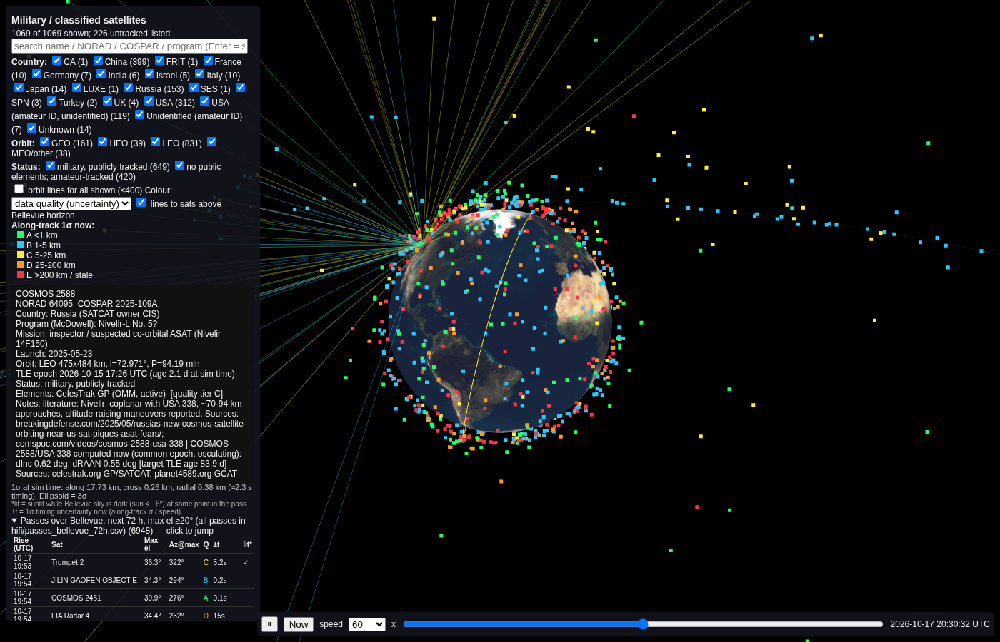
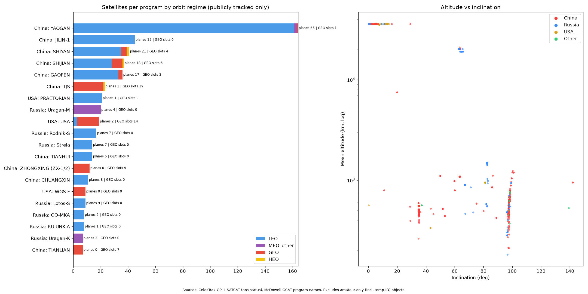

Military & classified satellites – MVP
Built 2026-10-17 from public data only: CelesTrak (public orbit data and catalogue), Mike McCants' amateur orbit data for classified satellites, Jonathan McDowell's catalogues, and the SeeSat-L observers' mailing list. No logins.
What this is: a map of military and classified satellites whose orbits are published, by CelesTrak or by amateur observers. There are 1,069 of them: 399 Chinese, 153 Russian, 312 US, 119 objects tracked by amateurs under temporary IDs (Starshield-like), and a few from other countries. For each satellite we show where it is, how good its orbit data is, and when it passes over Bellevue, WA.
About the "no orbit" list: 226 entries are objects listed in the public satellite catalogues as in orbit, but with no published orbit anywhere public. It is a list of catalogue entries, not discoveries. We didn't find anything new.
3D globe →Live positions from the freshest public orbit data. Colours show data quality, a click shows that satellite's uncertainty, and Bellevue and its passes are marked. Needs internet for the 3D libraries.

Passes over Bellevue →Passes over the next 72 hours that peak above 20°, in PDT, with filters for visibility, quality tier and country. Snapshot from 2026-10-17; it expires.
Data downloads
The full 72-hour position files (about 0.9 GB of parquet) are kept offline and not hosted.
Constellations at a glance

Downloads are listed in the data card above.
Resilience key points
- China is mostly in low orbit (336 low-orbit vs 57 geostationary). Its reconnaissance fleets (Yaogan 164, Jilin-1 45) spread many satellites across shared orbital planes, so losing one satellite costs relatively little.
- Russia mixes low-orbit communications and reconnaissance, GLONASS navigation (the only big program with spares flagged in the official catalogue), and high elliptical-orbit early-warning and communications satellites.
- The public US picture is mostly geostationary (WGS, AEHF, SBIRS, MUOS: one satellite per slot, none side by side). Most US low-orbit reconnaissance satellites have no public orbit data.
- Sparse programs (e.g. Lotos-S with 9 satellites in 9 planes, Bars-M, the US geostationary programs, and 20 single-satellite programs) depend on replacement launches, not spares already in orbit.
- Proximity activity worth watching (from public reporting): Russian inspector satellites Cosmos 2576 and 2588 sit near the orbital planes of US satellites, and China's Shijian-21 and Shijian-25 docked in geostationary orbit in 2025. Sources are in the dataset's notes column.
Caveats, plainly
- Amateur orbit data for classified satellites is km-level at best, often weeks old, and drifts. Positions and pass times can be off by seconds to minutes or more, and by much more if a satellite has maneuvered. Nothing here is metre-level.
- US coverage is incomplete. If no public or amateur source publishes a satellite's orbit, it can't appear on the globe.
- Objects with temporary amateur IDs (e.g. "StarSh") are shown as labelled. We deliberately don't try to work out which official satellite each one is.
- Plane counts and program groupings are rough estimates. Mission labels marked "suspected" are analysts' assessments, not facts.
- "No data found" doesn't mean nobody tracks it. Only telescope observation can confirm that.
How to regenerate everything: hifi/README.md.